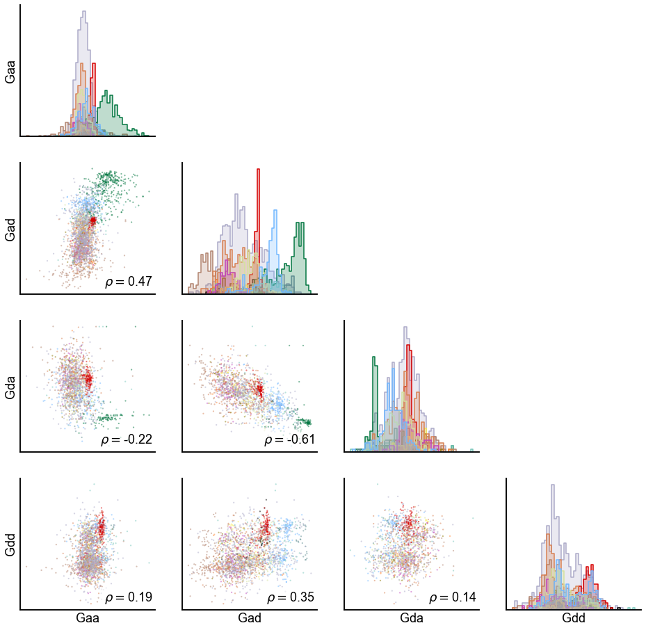
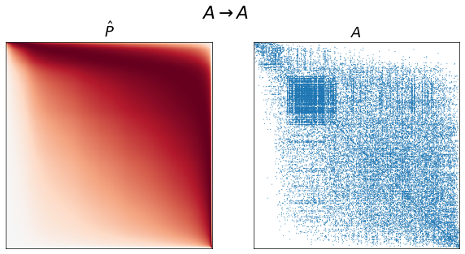
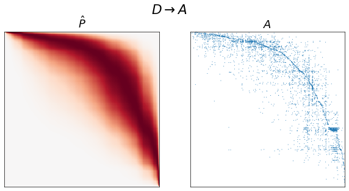
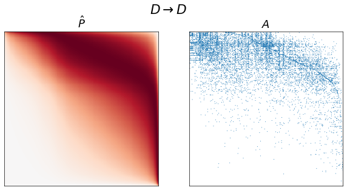
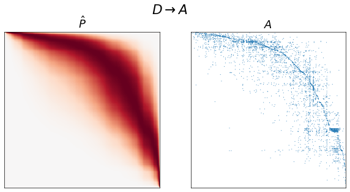
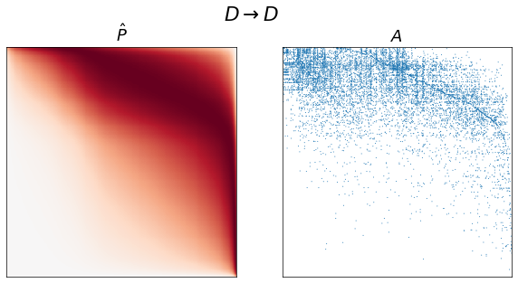
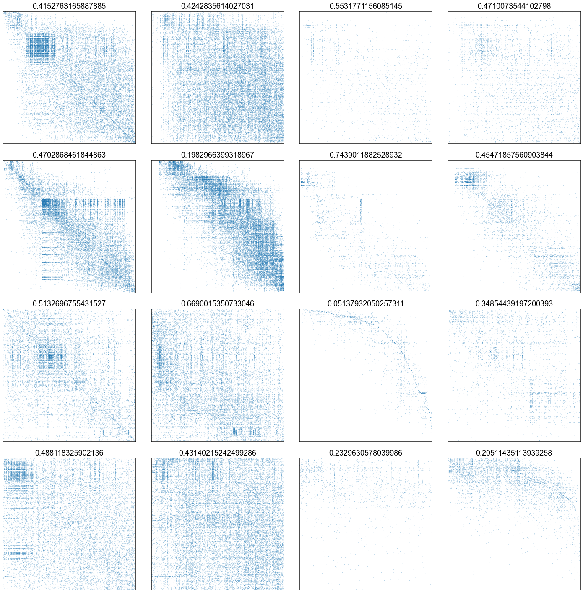
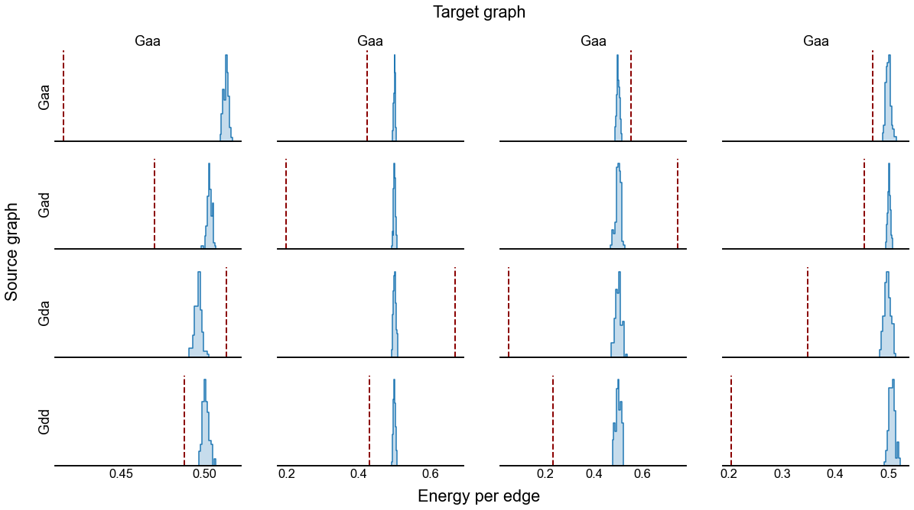

Flow¶
import matplotlib.pyplot as plt
import numpy as np
import pandas as pd
import seaborn as sns
from graspologic.utils import binarize, get_lcc, is_fully_connected
from scipy.stats import rankdata, spearmanr
import SpringRank as sr
from pkg.data import load_data
from pkg.io import savefig, set_cwd
from pkg.plot import CLASS_COLOR_DICT, set_theme
from src.visualization import adjplot # TODO will be in graspologic
set_theme()
/Users/bpedigo/miniconda3/envs/maggot-revamp/lib/python3.8/site-packages/umap/__init__.py:9: UserWarning: Tensorflow not installed; ParametricUMAP will be unavailable
warn("Tensorflow not installed; ParametricUMAP will be unavailable")
# get the joint (union) LCC across all graphs
# this is just the LCC of the sum graph (G)
data = load_data("G")
adj = data.adj
meta = data.meta
lcc_adj, keep_inds = get_lcc(adj, return_inds=True)
# meta = meta.iloc[keep_inds]
graph_types = ["Gaa", "Gad", "Gda", "Gdd"]
graph_type_names = {
"Gaa": r"$A \rightarrow A$",
"Gad": r"$A \rightarrow D$",
"Gda": r"$D \rightarrow A$",
"Gdd": r"$D \rightarrow D$",
}
graphs = {}
for graph_type in graph_types:
temp_data = load_data(graph_type)
temp_meta = temp_data.meta
temp_adj = temp_data.adj
assert (temp_meta.index.values == meta.index.values).all()
temp_adj = temp_adj[np.ix_(keep_inds, keep_inds)]
graphs[graph_type] = temp_adj
meta = meta.iloc[keep_inds].copy()
for graph_type in graph_types:
adj = graphs[graph_type]
adj_lcc, inds = get_lcc(adj, return_inds=True)
adj_lcc = binarize(adj_lcc)
ranks = sr.get_ranks(adj_lcc)
meta[f"{graph_type}_sr_score"] = np.nan
meta[f"{graph_type}_sr_rank"] = np.nan
meta.loc[meta.index[inds], f"{graph_type}_sr_score"] = ranks
spring_rank = rankdata(ranks)
meta.loc[meta.index[inds], f"{graph_type}_sr_rank"] = spring_rank
hue_key = "simple_class"
var = "sr_score"
n_graphs = len(graph_types)
fig, axs = plt.subplots(n_graphs, n_graphs, figsize=(16, 16))
for i, row_graph in enumerate(graph_types):
for j, col_graph in enumerate(graph_types):
x_var = f"{col_graph}_{var}"
y_var = f"{row_graph}_{var}"
spearman_corr, _ = spearmanr(meta[x_var], meta[y_var], nan_policy="omit")
ax = axs[i, j]
if i > j:
sns.scatterplot(
data=meta,
x=x_var,
y=y_var,
hue=hue_key,
palette=CLASS_COLOR_DICT,
ax=ax,
s=5,
alpha=0.5,
linewidth=0,
legend=False,
)
text = ax.text(
0.98,
0.03,
r"$\rho = $" + f"{spearman_corr:0.2f}",
transform=ax.transAxes,
ha="right",
va="bottom",
color="black",
)
text.set_bbox(dict(facecolor="white", alpha=0.6, edgecolor="w"))
elif i == j:
sns.histplot(
data=meta,
x=x_var,
ax=ax,
bins=50,
element="step",
# color="grey",
hue=hue_key,
palette=CLASS_COLOR_DICT,
legend=False,
stat="density",
common_norm=True,
)
else:
ax.axis("off")
ax.set(xticks=[], yticks=[], xlabel="", ylabel="")
if i == n_graphs - 1:
ax.set(xlabel=f"{col_graph}")
if j == 0:
ax.set(ylabel=f"{row_graph}")
# stashfig(f"{var}-pairwise")

for graph_type in graph_types:
adj = graphs[graph_type]
adj_lcc, inds = get_lcc(adj, return_inds=True)
ranks = sr.get_ranks(adj_lcc)
beta = sr.get_inverse_temperature(adj_lcc, ranks)
print(beta)
1.1144380799117166
2.0381613667869867
3.4640518828635893
1.8371778437153456
A = adj_lcc.copy()
ranks = sr.get_ranks(A)
beta = sr.get_inverse_temperature(A, ranks)
def estimate_spring_rank_P(A, ranks, beta):
H = ranks[:, None] - ranks[None, :] - 1
H = np.multiply(H, H)
H *= 0.5
P = np.exp(-beta * H)
P *= np.mean(A) / np.mean(P) # TODO I might be off by a constant here
return P
for graph_type in graph_types:
adj = graphs[graph_type]
A, inds = get_lcc(adj, return_inds=True)
ranks = sr.get_ranks(A)
beta = sr.get_inverse_temperature(A, ranks)
P = estimate_spring_rank_P(A, ranks, beta)
sort_inds = np.argsort(-ranks)
fig, axs = plt.subplots(1, 2, figsize=(10, 5))
adjplot(P[np.ix_(sort_inds, sort_inds)], ax=axs[0], cbar=False, title=r"$\hat{P}$")
adjplot(
A[np.ix_(sort_inds, sort_inds)],
plot_type="scattermap",
ax=axs[1],
sizes=(1, 1),
title=r"$A$",
)
fig.suptitle(graph_type_names[graph_type])

 



def swap_edges(A):
swapped_A = A.copy()
row_inds, col_inds = np.nonzero(A)
uniform_rvs = np.random.uniform(size=len(row_inds))
swap_inds_inds = np.nonzero(uniform_rvs < 0.5)
swap_row_inds = row_inds[swap_inds_inds]
swap_col_inds = col_inds[swap_inds_inds]
swapped_A[swap_row_inds, swap_col_inds] = A[swap_col_inds, swap_row_inds]
swapped_A[swap_col_inds, swap_row_inds] = A[swap_row_inds, swap_col_inds]
# for i, (row_ind, col_ind) in enumerate(zip(row_inds, col_inds)):
# if uniform_rvs[i]:
# swapped_A[row_ind, col_ind] = A[col_ind, row_ind]
# swapped_A[col_ind, row_ind] = A[row_ind, col_ind]
return swapped_A
def ground_state_energy(A, ranks, per_edge=False):
degree_in = A.sum(axis=0)
degree_out = A.sum(axis=1)
edges = A.sum()
energy = 0.5 * np.sum((degree_in - degree_out) * ranks) + 0.5 * edges
if per_edge:
energy /= edges
return energy
graph_type = "Gaa"
A = graphs[graph_type].copy()
# optional thresholding
# A[A < 3] = 0
# A[A > 0] = 1
A, inds = get_lcc(A, return_inds=True)
# original adjacency
ranks = sr.get_ranks(A)
sort_inds = np.argsort(-ranks)
fig, axs = plt.subplots(2, 2, figsize=(10, 10))
print(ground_state_energy(A, ranks))
adjplot(
A[np.ix_(sort_inds, sort_inds)],
plot_type="scattermap",
ax=axs[0, 0],
sizes=(0.5, 0.5),
title=r"$A$",
)
# sampling a network from that model
beta = sr.get_inverse_temperature(A, ranks)
P = estimate_spring_rank_P(A, ranks, beta)
sampled_A = np.random.poisson(P)
ranks = sr.get_ranks(sampled_A)
sort_inds = np.argsort(-ranks)
print(ground_state_energy(sampled_A, ranks))
adjplot(
sampled_A[np.ix_(sort_inds, sort_inds)],
plot_type="scattermap",
ax=axs[0, 1],
sizes=(0.5, 0.5),
title=r"Sampled $A$",
)
# edge-direction swapped network
swapped_A = swap_edges(A)
ranks = sr.get_ranks(swapped_A)
sort_inds = np.argsort(-ranks)
print(ground_state_energy(swapped_A, ranks))
adjplot(
swapped_A[np.ix_(sort_inds, sort_inds)],
plot_type="scattermap",
ax=axs[1, 0],
sizes=(0.5, 0.5),
title=r"$A_{swap}$",
)
# edge-direction swapped model
beta = sr.get_inverse_temperature(swapped_A, ranks)
P = estimate_spring_rank_P(swapped_A, ranks, beta)
sampled_swapped_A = np.random.poisson(P)
ranks = sr.get_ranks(sampled_swapped_A)
sort_inds = np.argsort(-ranks)
print(ground_state_energy(sampled_swapped_A, ranks))
adjplot(
sampled_swapped_A[np.ix_(sort_inds, sort_inds)],
plot_type="scattermap",
ax=axs[1, 1],
sizes=(0.5, 0.5),
title=r"Sampled $A_{swap}$",
)
36366.577596313386
29401.08333698647
40627.98293932192
34908.35595505854
(<AxesSubplot:title={'center':'Sampled $A_{swap}$'}>,
<mpl_toolkits.axes_grid1.axes_divider.AxesDivider at 0x7fbffec456a0>,
<AxesSubplot:title={'center':'Sampled $A_{swap}$'}>,
<AxesSubplot:title={'center':'Sampled $A_{swap}$'}>)
tstat = ground_state_energy(A, ranks)
energies = []
for i in range(100):
# this was the wrong null
# sampled_A = np.random.poisson(P)
swapped_A = swap_edges(A)
ranks = sr.get_ranks(swapped_A)
energy = ground_state_energy(swapped_A, ranks)
# print(is_fully_connected(swapped_A))
#
# bootstrapped_beta = sr.get_inverse_temperature(swapped_A, ranks)
# print()
energies.append(energy)
fig, ax = plt.subplots(1, 1, figsize=(8, 6))
sns.histplot(energies, ax=ax)
ax.axvline(tstat, color="darkred", linestyle="--")
<matplotlib.lines.Line2D at 0x7fbffe1b3cd0>
fig, axs = plt.subplots(4, 4, figsize=(20, 20))
for i, graph_type_source in enumerate(graph_types):
A_source = graphs[graph_type_source].copy()
A_source, keep_inds = get_lcc(A_source, return_inds=True)
# original adjacency
ranks = sr.get_ranks(A_source)
sort_inds = np.argsort(-ranks)
for j, graph_type_target in enumerate(graph_types):
A_target = graphs[graph_type_target].copy()
A_target = A_target[np.ix_(keep_inds, keep_inds)]
adjplot(
A_target[np.ix_(sort_inds, sort_inds)],
plot_type="scattermap",
ax=axs[i, j],
sizes=(0.4, 0.4),
# title=r"$A$",
title=ground_state_energy(A_target, ranks, per_edge=True),
)
# print()
plt.tight_layout()

from tqdm import tqdm
def histplot(data, x=None, hue=None, ax=None, **kwargs):
sizes = data.groupby(hue).size()
single_hues = np.unique(sizes[sizes == 1].index)
single_data = data[data[hue].isin(single_hues)]
other_data = data[~data[hue].isin(single_hues)]
sns.histplot(other_data, x=x, hue=hue, ax=ax, **kwargs)
for idx, row in single_data.iterrows():
x_val = row[x]
ax.axvline(x_val, color="darkred", linestyle="--", linewidth=2)
def calculate_p_triu(A):
# TODO is this correct?
triu_inds = np.triu_indices(len(A), k=1)
n_A_upper = A[triu_inds].sum()
n_A_lower = A[triu_inds[::-1]].sum()
p_A_upper = n_A_upper / (n_A_lower + n_A_upper)
return p_A_upper
rows = []
for i, graph_type_source in enumerate(graph_types):
A_source = graphs[graph_type_source].copy()
A_source, keep_inds = get_lcc(A_source, return_inds=True)
# original adjacency
ranks = sr.get_ranks(A_source)
sort_inds = np.argsort(-ranks)
for j, graph_type_target in enumerate(graph_types):
A_target = graphs[graph_type_target].copy()
A_target = A_target[np.ix_(keep_inds, keep_inds)]
energy = ground_state_energy(A_target, ranks, per_edge=True)
# p_upper = calculate_p_triu(A_target[np.ix_(sort_inds, sort_inds)])
rows.append(
{
"energy": energy,
"type": "Observed",
"graph_type_source": graph_type_source,
"graph_type_target": graph_type_target,
# "p_upper": p_upper,
}
)
for _ in tqdm(range(100), desc=f"{graph_type_source}, {graph_type_target}"):
swapped_A_target = swap_edges(A_target)
# ranks = sr.get_ranks(swapped_A) # dont use old ranks, use ones from
# "source" graph
energy = ground_state_energy(swapped_A_target, ranks, per_edge=True)
# p_upper = calculate_p_triu(swapped_A_target[np.ix_(sort_inds, sort_inds)])
rows.append(
{
"energy": energy,
"type": "Swapped",
"graph_type_source": graph_type_source,
"graph_type_target": graph_type_target,
# "p_upper": p_upper,
}
)
Gaa, Gaa: 100%|██████████| 100/100 [00:09<00:00, 10.42it/s]
Gaa, Gad: 100%|██████████| 100/100 [00:10<00:00, 9.81it/s]
Gaa, Gda: 100%|██████████| 100/100 [00:09<00:00, 10.17it/s]
Gaa, Gdd: 100%|██████████| 100/100 [00:09<00:00, 10.22it/s]
Gad, Gaa: 100%|██████████| 100/100 [00:10<00:00, 9.97it/s]
Gad, Gad: 100%|██████████| 100/100 [00:10<00:00, 9.58it/s]
Gad, Gda: 100%|██████████| 100/100 [00:10<00:00, 9.76it/s]
Gad, Gdd: 100%|██████████| 100/100 [00:10<00:00, 9.87it/s]
Gda, Gaa: 100%|██████████| 100/100 [00:04<00:00, 24.03it/s]
Gda, Gad: 100%|██████████| 100/100 [00:04<00:00, 24.77it/s]
Gda, Gda: 100%|██████████| 100/100 [00:03<00:00, 26.84it/s]
Gda, Gdd: 100%|██████████| 100/100 [00:03<00:00, 26.10it/s]
Gdd, Gaa: 100%|██████████| 100/100 [00:05<00:00, 16.81it/s]
Gdd, Gad: 100%|██████████| 100/100 [00:06<00:00, 16.12it/s]
Gdd, Gda: 100%|██████████| 100/100 [00:05<00:00, 17.74it/s]
Gdd, Gdd: 100%|██████████| 100/100 [00:05<00:00, 17.72it/s]
results = pd.DataFrame(rows)
fig, axs = plt.subplots(4, 4, figsize=(20, 10), sharex="col")
for i, graph_type_source in enumerate(graph_types):
for j, graph_type_target in enumerate(graph_types):
sub_results = results[
(results["graph_type_source"] == graph_type_source)
& (results["graph_type_target"] == graph_type_target)
]
ax = axs[i, j]
histplot(
data=sub_results,
x="energy",
hue="type",
ax=ax,
stat="density",
element="step",
)
ax.get_legend().remove()
ax.set(yticks=[], ylabel="", xlabel="")
ax.spines["left"].set_visible(False)
if j == 0:
ax.set(ylabel=graph_type_source)
if i == 0:
ax.set(title=graph_type_source)
fig.text(0.51, 0.94, "Target graph", fontsize="large", ha="center")
fig.text(0.08, 0.43, "Source graph", rotation=90, fontsize="large")
fig.text(0.51, 0.06, "Energy per edge", fontsize="large", ha="center")
savefig("energy-densities", foldername="flow_rank")
